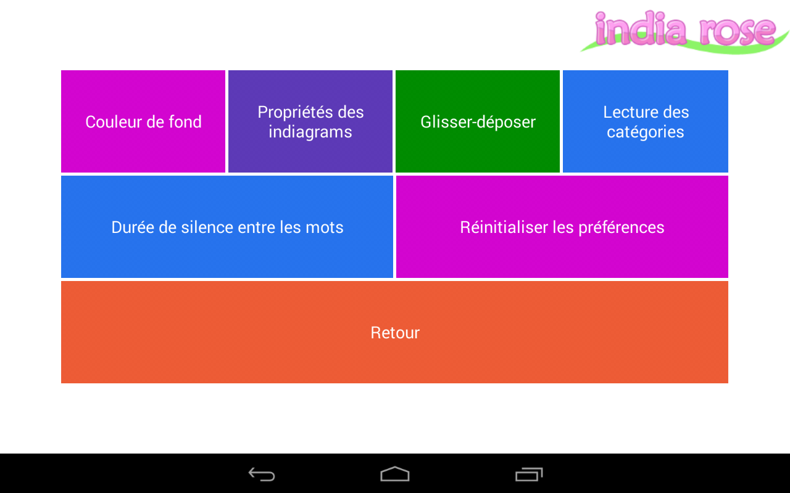
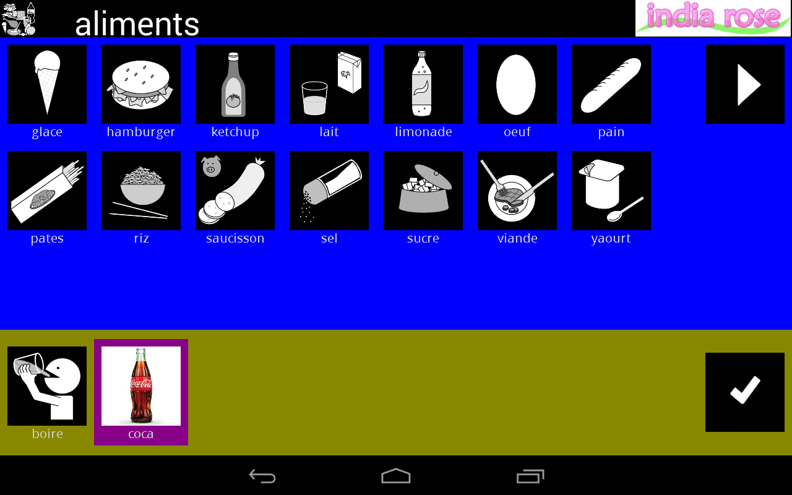

|
Renouer le lien extérieur avec les autistes. India Rose leur permet de composer une phrase afin de se faire comprendre. Depuis le 4 janvier, cette application est téléchargeable gratuitement sur Playstore et fonctionne sur Android.
Développé pour les tablettes, ce service se présente de manière très simple. Quatre cents pictogrammes symbolisent les tâches de la vie courante. Il suffit de les cliquer pour composer une phrase. Une synthèse vocale la prononce ensuite à haute voix. « Un enfant qui a moins de 14 ans peut quasiment tout dire », estime Julien Mialon, un des six développeurs de ce projet. Les parents peuvent ensuite enrichir cette base de données en ajoutant des fonctions.
|
|  |
Lorsque le groupe d'étudiants reprend le projet, India Rose est encore à l'état de prototype. En 2011, il a été récompensé par Windows. Le binôme d'origine est composé de José Martins et d'Anthony Froissant. En juillet 2012, une nouvelle équipe est constituée autour de José, chercheur au CEA (Commissariat à l'énergie atomique et aux énergies alternatives), et de cinq étudiants en master 2 au département informatique de l'université d'Orléans.
Pour assurer ce développement, nous avons travaillé en partenariat avec le CHU d'Orléans », raconte Florent Champigny. Le design retenu est sobre et efficace.
India Rose peut facilement remplacer les outils de communication employés par les autistes.
|
|  |
Dans un monde numérique en plein essor, selon les développeurs orléanais, il n'existe pas d'application concurrente. « La seule, poursuit Julien, est en anglais et coûte 300 dollars. La nôtre est gratuite. » India Rose est disponible en français et en anglais. Elle devrait prochainement l'être en portugais, russe et allemand.
Ce service ne s'adresse pas exclusivement aux autistes mais peut être élargi à toute personne handicapée par des problèmes de communication. « Des sourds, par exemple », illustre Florent. À terme, elle pourrait aussi être utilisée par des ceux souhaitant communiquer, de manière simplifiée, dans une langue étrangère qu'ils ne maîtrisent pas.
|